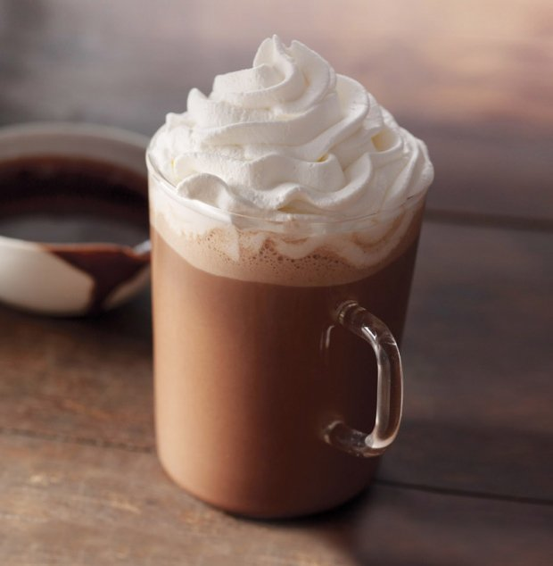

Choose one of our flavours
Click Here to see our Full Range Coffee Menu
Special Coffee Menu
 |
 |
||
|---|---|---|---|
| CAPPUCINO | ESPRESSO | LATTE | MOCHA |
| One of the more popular options when it comes to coffee, the cappuccino has multiple layers to it, giving it extra taste and texture. The first layer is made up of espresso, giving you the caffeine kick, followed by a shot of steamed milk to counter the bitter coffee taste, topped off with a layer of foamy milk to make it easy to drink. Cappuccinos are often finished off with a sprinkling of chocolate powder, giving drinkers a slight sugar hit as well, perfect for those early mornings. | While the base for many other coffees, espressos can also be enjoyed by themselves, with the smaller, more concentrated caffeine hit a popular option at many cafés. Traditionally made by forcing out a small amount of nearly boiling water under pressure through finely ground coffee beans, no milk or extras are usually added to espressos, making it an acquired taste for some, but the perfect hit for those who simply need to wake up. | Often a good option for those who aren’t regular coffee drinkers, lattes are made with foamed milk, aiding to hide the bitterness of coffee. Lattes contain one or more shots of espresso (depending on how strong you like it), with the milk poured over it, creating a frothy drink for you to enjoy. A word of advice for the traveller though, be sure to order a ‘café latte’ when you’re in Italy, as ordering a simple latte will score you a glass of milk. | Another go-to option for first time coffee drinkers, the mocha is a latte with a few extras, including chocolate powder or syrup added, making it a bit thicker and sweeter than most coffees, while still containing a hint of coffee taste. While it will depend on how much you like sweet things, the choice between a mocha and a latte will be up to you. |
 |
 |
 |
 |
| VIENNA | AFFOGATO | CARAMEL MACCHIATO | FRAPPE | Vienna Coffee is the name of a popular traditional cream-based coffee beverage. It is made by preparing two shots of strong black espresso in a standard sized coffee cup and infusing the coffee with whipped cream (as a replacement for milk and sugar) until the cup is full. Then the cream is twirled and optionally topped off with chocolate sprinklings. The coffee is drunk through the creamy top | Affogato, the word for “drowned” in Italian, makes the perfect after-dinner alternative to coffee and dessert! This simple treat is a delicious way to entertain your dinner guests, long after the main course. If you don’t brew espresso, no fear! DeLallo’s Instant Espresso Powder is a perfect substitute! | The delicious, multi-layered Macchiato begins with milk steamed until it's stretched and smooth to bring out its natural sweetness and is topped by a dense, creamy foam. Then rich espresso is poured over and through the foam, where it mixes with the milk and creates a brown mark on top. Finally, the barista signs their work of art with a crosshatch of sweet caramel sauce. | A frappe is an iced beverage that has been shaken, blended or beaten to produce a tasty, foamy, and refreshing drink. It is served cold, often with whipped cream and toppings. You can add ice before or after beating the coffee and custom additives such as sugar, milk, vanilla, and sweet sauces. It depends on what you are shaking or blending it in: a shaker, frappe maker or blender. An ice-crushing blender is better than a shaker for blending a frappe. |
Where To Find Us
The Coffee Club
78-88 Tench Ave, Jamisontown NSW 2750
Phone: +61 7 3010 3000
Fax: +61 7 3844 2551
Email: reception@minordkl.com.aut
VIP Enquiries
Phone:1300 843 258
Email: vip@coffeeclub.com.au
Phone:1300 843 258
Email: vip@coffeeclub.com.au
-
Our Full Range Coffee Menu
-
Caffe Latte
A caffè latte is simply a shot or two of bold, tasty espresso with fresh, sweet steamed milk over it. Some prefer to add syrup or extra espresso to the recipe. Some maintain that it is entirely perfect as is.
-
Caffe Mocha
There’s no question that chocolate and coffee are flavours meant for each other. Both are rich and full of depth. Where one is creamy, the other is roasty. They complement each other perfectly. And when they come together under a fluffy cloud of sweetened whipped cream, you’ll wish their union would last forever.
-
White Chocolate Mocha
Fans of white chocolate will tell you that they love it for its elegant, creamy taste. That its smooth subtlety makes it a perfect complement to bolder flavours. Well, there aren’t many flavours bolder than our rich, full-bodied espresso. And as it turns out, there aren’t many better ways to experience the decadence of white chocolate than in this delicious beverage.
-
Caffe Americano

In Europe, coffee is essentially espresso – which, in America, isn’t very much coffee. To create a caffè americano – a coffee that satisfies the American preference for more sips in every cup – Europeans simply add hot water to their espresso. While the americano is similar in strength and taste to American-style brewed coffee, there are subtle differences achieved by pulling a fresh shot of espresso for the beverage base. The best way to discover these nuances, of course, is to try a cup yourself.
-
Cappucino

With less milk than a latte, cappuccino offers a stronger espresso flavour and a luxurious texture.To make it properly requires much skill and attentiveness. Arguably the most important part is frothing the foam to velvety perfection as the milk steams – something our baristas take great care to achieve. The milky moustache that clings to your upper lip is proof we’ve made yours right. And may we say, you wear it well.
-
Espresso Con Panna
This is the perfect introduction to espresso for those who are unsure they’re ready for the full-throttle intensity of a straight-up shot. The delicate dollop of whipped cream softens the rich and caramelly espresso flavours so exquisitely, you may choose to forego adding sugar altogether.
-
Flat White
A uniquely Australian coffee, slightly stronger than a latte, with steamed milk. Expertly steamed milk poured over a double shot of our signature espresso and finished with a thin layer of velvety microfoam.
-
Caffe Misto
While Italians call it caffè misto, in France, it’s known as café au lait, and in Spain, café con leche. Whatever you call it, it’s a delightfully smooth and milky drink, perfect for sitting, sipping and contemplating the day.
-
Brewed Coffee
In our travels around the world, we’ve tasted many a splendid cup of coffee. Each one offers something different and unique. The clean, nutty taste of a good Colombia. The citrusy snap of a Kenya. The herbal mellowness of a Sumatra. Back home in our tasting room, we take these amazing coffees and mix them with beans from other regions. That’s how we create some of our most famous blends, like Starbucks® Christmas Blend. We love all of these single-origin coffees and blends. More than that, we love to share our passion. So each day we feature one of these outstanding brewed coffees for you to enjoy.
-
Caramel Macchiato
Scores of people are passionate devotees of this signature beverage. So bewitched are they, you’d think it was some kind of magical elixir. Well there’s no hocus pocus here. We’ll tell you exactly what goes into it: creamy vanilla-flavoured syrup, freshly steamed milk with a topping of velvety-rich foam, an intense hit of our Espresso Roast, a finishing of buttery caramel drizzle … okay, we take it back. That does sound like magic to us. (And it tastes even better).